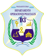
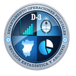

Leyendo la base de datos de siniestros viales.
Arrastrá aquí el archivo Excel, o elegilo desde tu equipo.
DEPARTAMENTO OPERACIONES POLICIALES D3 · SECCIÓN ESTADÍSTICA Y ARCHIVO


Consulta pública de los siniestros viales registrados por las dependencias policiales de la provincia. Filtrá por período, jurisdicción y características del hecho para armar tu propia lectura de los datos.
Accidentología Vial Aplicación digital accesible en dispositivos móviles y computadoras